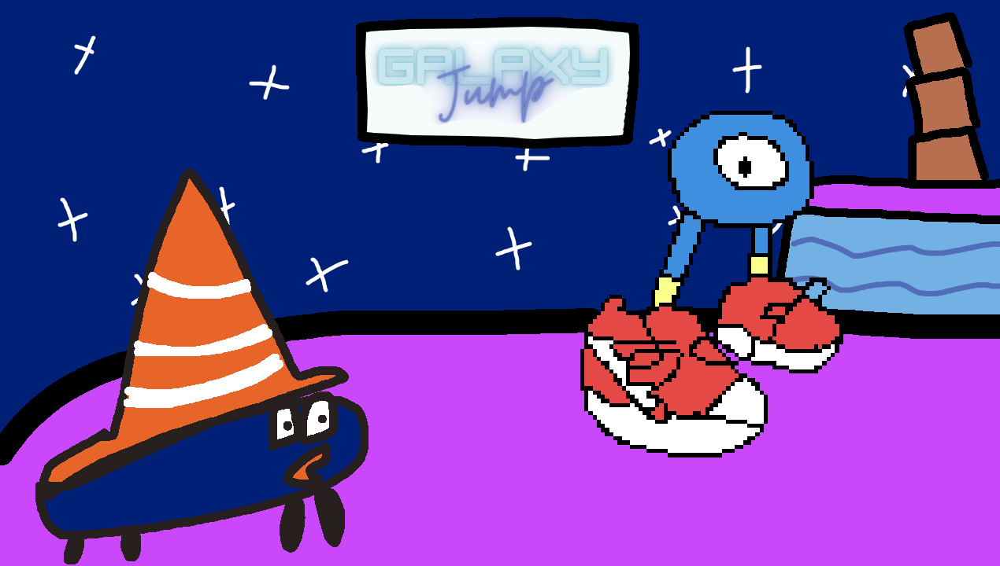

Welcome to Tony's home page ! ! !

Tony Imbesi
"My Master Piece"

Play My Game!! Galaxy Jump
- +4 months of game design and coding
- Web browser game for Javascript made with Phaser 3 Engine (https://github.com/photonstorm/phaser)
- Dynamic momentum-based platforming
- I also made the OST :)
- A fun and fair challenge
- With help from Johanna Beatty, Nabeeha Ashfaq, Josiah Cornelius
Click here to Play
Hobbies and Interests
- Playing Piano: I know a lot of classical pieces. The payoff is always very huge, and it's great hand exercise.
See me play some music now!
- Video Games: I play all of them! Especially when they're on Nintendo Switch and PC, because those are the two systems I have. Again, great hand exercise.
- Making my own songs: It's very fun to do it. Very hands-on, as well. I use "Studio One 5" by Presonus.
"Help! It's not working!"
Top Piano Songs
- Chopin - Polonaise, Op. 53
- Beethoven - "Moonlight" Sonata
- Chopin - Preludes Op. 28 No. 10
- Debussy - Prelude Book 1, No. 12
- Debussy - Prelude Book 2, No. 5
Education and Job History:
-
Education:
- Georgia State University: 2019-current
- Veritas Classical Schools: 2013-2019
-
Jobs:
- Tutor for Georgia State University's Learning & Tutoring Center: 2020-2021
My Number One Quote
Yet knowing how way leads on to way,
I doubted if I should ever come back.
-Robert Frost, The Road Not Taken
Fun Links